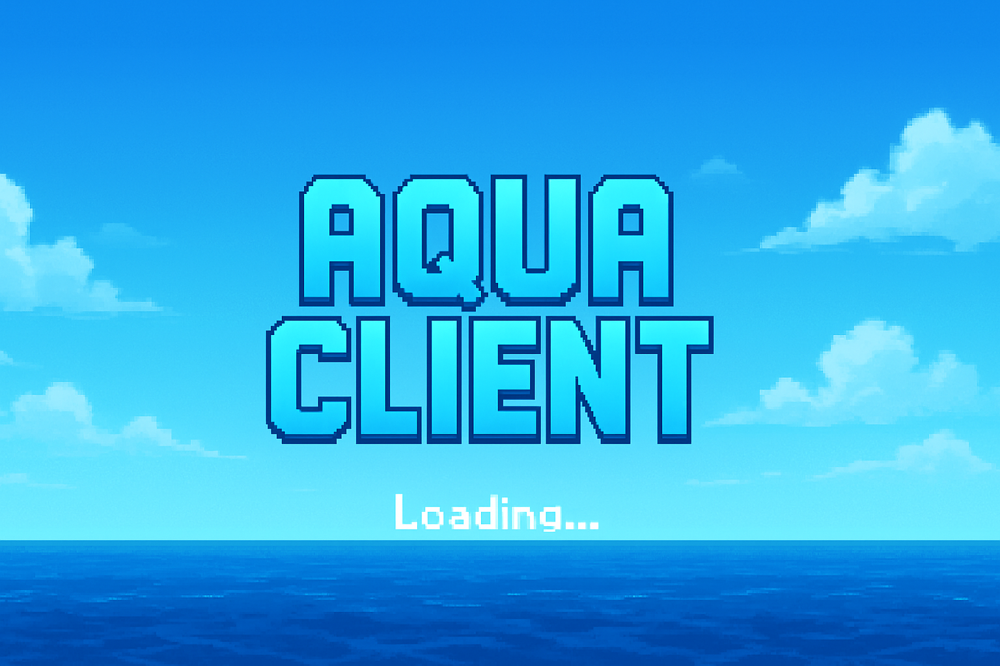

Arrow preview
Try auto-read from client
Speed
3.0
Gravity
0.05
Drag
0.99
Hide preview
If auto-read fails, uncheck "Try auto-read" and use manual values below.
Manual px,py,pz
Manual yaw (deg), pitch (deg)